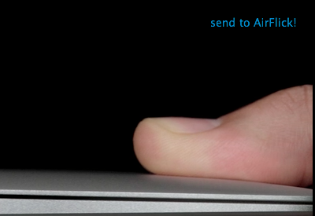

SendToAirFlick
Send url to Erica Sadun's AirFlick.
You need install AirFlick to your Mac OS X.
Since Version 1.5, You don't need AirFlick(You can use AirFlick opt-in.) so not only works on Mac OS X, but also Windows.
This is watching your page loading.
This adds "send to AirFlick!" link to send the media url to AirFlick, if Apple TV 2 may possibly play it.

With below site's Video streams, I know SendToAirFlick works.
Send image to AirPlay!
If you use Chrome, RockMelt or WebKit Nightly, you can see "send to AirPlay!" link at upper right corner of image, you can see "send image to AirPlay!" context menu on image.
Download Links
Author
@norio_nomura
Source Code
The MIT License
Copyright (c) 2011 Norio Nomura
Permission is hereby granted, free of charge, to any person obtaining a copy
of this software and associated documentation files (the "Software"), to deal
in the Software without restriction, including without limitation the rights
to use, copy, modify, merge, publish, distribute, sublicense, and/or sell
copies of the Software, and to permit persons to whom the Software is
furnished to do so, subject to the following conditions:
The above copyright notice and this permission notice shall be included in
all copies or substantial portions of the Software.
THE SOFTWARE IS PROVIDED "AS IS", WITHOUT WARRANTY OF ANY KIND, EXPRESS OR
IMPLIED, INCLUDING BUT NOT LIMITED TO THE WARRANTIES OF MERCHANTABILITY,
FITNESS FOR A PARTICULAR PURPOSE AND NONINFRINGEMENT. IN NO EVENT SHALL THE
AUTHORS OR COPYRIGHT HOLDERS BE LIABLE FOR ANY CLAIM, DAMAGES OR OTHER
LIABILITY, WHETHER IN AN ACTION OF CONTRACT, TORT OR OTHERWISE, ARISING FROM,
OUT OF OR IN CONNECTION WITH THE SOFTWARE OR THE USE OR OTHER DEALINGS IN
THE SOFTWARE.
norio-nomura's SendToAirFlick at master - GitHub